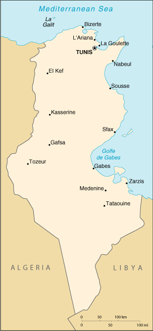

|
Tunisia | |
| Introduction Geography People Government Economy Communications Transportation Military Transnational Issues | ||
|  | ||
| Tunisia | Introduction | Top of Page |
| Background: | Following independence from France in 1956, President Habib BOURGIUBA established a strict one-party state. He dominated the country for 31 years, repressing Islamic fundamentalism and establishing rights for women unmatched by any other Arab nation. In recent years, Tunisia has taken a moderate, non-aligned stance in its foreign relations. Domestically, it has sought to diffuse rising pressure for a more open political society. |
| Tunisia | Geography | Top of Page |
| Location: | Northern Africa, bordering the Mediterranean Sea, between Algeria and Libya |
| Geographic coordinates: | 34 00 N, 9 00 E |
| Map references: | Africa |
| Area: |
total:
163,610 sq km
land: 155,360 sq km water: 8,250 sq km |
| Area - comparative: | slightly larger than Georgia |
| Land boundaries: |
total:
1,424 km
border countries: Algeria 965 km, Libya 459 km |
| Coastline: | 1,148 km |
| Maritime claims: |
contiguous zone:
24 NM
territorial sea: 12 NM |
| Climate: | temperate in north with mild, rainy winters and hot, dry summers; desert in south |
| Terrain: | mountains in north; hot, dry central plain; semiarid south merges into the Sahara |
| Elevation extremes: |
lowest point:
Shatt al Gharsah -17 m
highest point: Jebel ech Chambi 1,544 m |
| Natural resources: | petroleum, phosphates, iron ore, lead, zinc, salt |
| Land use: |
arable land:
19%
permanent crops: 13% permanent pastures: 20% forests and woodland: 4% other: 44% (1993 est.) |
| Irrigated land: | 3,850 sq km (1993 est.) |
| Natural hazards: | NA |
| Environment - current issues: | toxic and hazardous waste disposal is ineffective and presents human health risks; water pollution from raw sewage; limited natural fresh water resources; deforestation; overgrazing; soil erosion; desertification |
| Environment - international agreements: |
party to:
Biodiversity, Climate Change, Desertification, Endangered Species, Environmental Modification, Hazardous Wastes, Law of the Sea, Marine Dumping, Nuclear Test Ban, Ozone Layer Protection, Ship Pollution, Wetlands
signed, but not ratified: Marine Life Conservation |
| Geography - note: | strategic location in central Mediterranean; Malta and Tunisia are discussing the commercial exploitation of the continental shelf between their countries, particularly for oil exploration |
| Tunisia | People | Top of Page |
| Population: | 9,705,102 (July 2001 est.) |
| Age structure: |
0-14 years:
28.74% (male 1,440,636; female 1,348,133)
15-64 years: 65.12% (male 3,157,988; female 3,161,596) 65 years and over: 6.14% (male 296,930; female 299,819) (2001 est.) |
| Population growth rate: | 1.15% (2001 est.) |
| Birth rate: | 17.11 births/1,000 population (2001 est.) |
| Death rate: | 4.99 deaths/1,000 population (2001 est.) |
| Net migration rate: | -0.67 migrant(s)/1,000 population (2001 est.) |
| Sex ratio: |
at birth:
1.08 male(s)/female
under 15 years: 1.07 male(s)/female 15-64 years: 1 male(s)/female 65 years and over: 0.99 male(s)/female total population: 1.02 male(s)/female (2001 est.) |
| Infant mortality rate: | 29.04 deaths/1,000 live births (2001 est.) |
| Life expectancy at birth: |
total population:
73.92 years
male: 72.35 years female: 75.62 years (2001 est.) |
| Total fertility rate: | 1.99 children born/woman (2001 est.) |
| HIV/AIDS - adult prevalence rate: | 0.04% (1999 est.) |
| HIV/AIDS - people living with HIV/AIDS: | NA |
| HIV/AIDS - deaths: | NA |
| Nationality: |
noun:
Tunisian(s)
adjective: Tunisian |
| Ethnic groups: | Arab 98%, European 1%, Jewish and other 1% |
| Religions: | Muslim 98%, Christian 1%, Jewish and other 1% |
| Languages: | Arabic (official and one of the languages of commerce), French (commerce) |
| Literacy: |
definition:
age 15 and over can read and write
total population: 66.7% male: 78.6% female: 54.6% (1995 est.) |
| Tunisia | Government | Top of Page |
| Country name: |
conventional long form:
Republic of Tunisia
conventional short form: Tunisia local long form: Al Jumhuriyah at Tunisiyah local short form: Tunis |
| Government type: | republic |
| Capital: | Tunis |
| Administrative divisions: | 23 governorates; Ariana (Aryanah), Beja (Bajah), Ben Arous (Bin 'Arus), Bizerte (Banzart), El Kef (Al Kaf), Gabes (Qabis), Gafsa (Qafsah), Jendouba (Jundubah), Kairouan (Al Qayrawan), Kasserine (Al Qasrayn), Kebili (Qibili), Mahdia (Al Mahdiyah), Medenine (Madanin), Monastir (Al Munastir), Nabeul (Nabul), Sfax (Safaqis), Sidi Bou Zid (Sidi Bu Zayd), Siliana (Silyanah), Sousse (Susah), Tataouine (Tatawin), Tozeur (Tawzar), Tunis, Zaghouan (Zaghwan) |
| Independence: | 20 March 1956 (from France) |
| National holiday: | Independence Day, 20 March (1956) |
| Constitution: | 1 June 1959; amended 12 July 1988 |
| Legal system: | based on French civil law system and Islamic law; some judicial review of legislative acts in the Supreme Court in joint session |
| Suffrage: | 20 years of age; universal |
| Executive branch: |
chief of state:
President Zine El Abidine BEN ALI (since 7 November 1987)
head of government: Prime Minister Mohamed GHANNOUCHI (since 17 November 1999) cabinet: Council of Ministers appointed by the president elections: president elected by popular vote for a five-year term; election last held 24 October 1999 (next to be held NA 2004); prime minister appointed by the president election results: President Zine El Abidine BEN ALI reelected for a third term without opposition; percent of vote - Zine El Abidine BEN ALI nearly 100% |
| Legislative branch: |
unicameral Chamber of Deputies or Majlis al-Nuwaab (182 seats; members elected by popular vote to serve five-year terms)
elections: last held 24 October 1999 (next to be held NA 2004) election results: percent of vote by party - RCD 92%; seats by party - RCD 148, MDS 13, UDU 7, PUP 7, Al-Tajdid 5, PSL 2; note - reforms enabled opposition parties to win up to 20% of seats; the opposition increased number of seats from 19 to 34 |
| Judicial branch: | Court of Cassation or Cour de Cassation |
| Political parties and leaders: | Al-Tajdid Movement [Adel CHAOUCH]; Constitutional Democratic Rally Party (Rassemblement Constitutionnel Democratique) or RCD [President Zine El Abidine BEN ALI (official ruling party)]; Liberal Social Party or PSL [Mounir BEJI]; Movement of Democratic Socialists or MDS [Khamis CHAMMARI]; Popular Unity Party or PUP [Mohamed Belhaj AMOR]; Unionist Democratic Union or UDU [Abderrahmane TLILI] |
| Political pressure groups and leaders: | the Islamic fundamentalist party, Al Nahda (Renaissance), is outlawed |
| International organization participation: | ABEDA, ACCT, AfDB, AFESD, AL, AMF, AMU, BSEC (observer), CCC, ECA, FAO, G-77, IAEA, IBRD, ICAO, ICC, ICFTU, ICRM, IDA, IDB, IFAD, IFC, IFRCS, IHO, ILO, IMF, IMO, Inmarsat, Intelsat, Interpol, IOC, IOM, ISO, ITU, MIPONUH, MONUC, NAM, OAS (observer), OAU, OIC, OPCW, OSCE (partner), UN, UN Security Council (temporary), UNCTAD, UNESCO, UNHCR, UNIDO, UNMEE, UNMIBH, UNMIK, UPU, WFTU, WHO, WIPO, WMO, WToO, WTrO |
| Diplomatic representation in the US: |
chief of mission:
Ambassador Hatem ATALLAH
chancery: 1515 Massachusetts Avenue NW, Washington, DC 20005 telephone: [1] (202) 862-1850 |
| Diplomatic representation from the US: |
chief of mission:
Ambassador Rust DEMMING
embassy: 144 Avenue de la Liberte, 1002 Tunis-Belvedere mailing address: use embassy street address telephone: [216] (1) 782-566 FAX: [216] (1) 789-719 |
| Flag description: | red with a white disk in the center bearing a red crescent nearly encircling a red five-pointed star; the crescent and star are traditional symbols of Islam |
| Tunisia | Economy | Top of Page |
| Economy - overview: | Tunisia has a diverse economy, with important agricultural, mining, energy, tourism, and manufacturing sectors. Governmental control of economic affairs while still heavy has gradually lessened over the past decade with increasing privatization, simplification of the tax structure, and a prudent approach to debt. Real growth averaged 5.5% in the past four years, and inflation is slowing. Growth in tourism and increased trade have been key elements in this steady growth. Tunisia's association agreement with the European Union entered into force on 1 March 1998, the first such accord between the EU and Mediterranean countries to be activated. Under the agreement Tunisia will gradually remove barriers to trade with the EU over the next decade. Broader privatization, further liberalization of the investment code to increase foreign investment, and improvements in government efficiency are among the challenges for the future. |
| GDP: | purchasing power parity - $62.8 billion (2000 est.) |
| GDP - real growth rate: | 5% (2000 est.) |
| GDP - per capita: | purchasing power parity - $6,500 (2000 est.) |
| GDP - composition by sector: |
agriculture:
14%
industry: 32% services: 54% (1999 est.) |
| Population below poverty line: | 6% (2000 est.) |
| Household income or consumption by percentage share: |
lowest 10%:
2.3%
highest 10%: 30.7% (1990) |
| Inflation rate (consumer prices): | 3% (2000 est.) |
| Labor force: |
2.65 million (2000 est.)
note: shortage of skilled labor |
| Labor force - by occupation: | services 55%, industry 23%, agriculture 22% (1995 est.) |
| Unemployment rate: | 15.6% (2000 est.) |
| Budget: |
revenues:
$7.5 billion
expenditures: $8.1 billion, including capital expenditures to $1.6 billion (2000 est.) |
| Industries: | petroleum, mining (particularly phosphate and iron ore), tourism, textiles, footwear, food, beverages |
| Industrial production growth rate: | 4.1% (2000 est.) |
| Electricity - production: | 9.173 billion kWh (1999) |
| Electricity - production by source: |
fossil fuel:
99.2%
hydro: 0.8% nuclear: 0% other: 0% (1999) |
| Electricity - consumption: | 8.677 billion kWh (1999) |
| Electricity - exports: | 19 million kWh (1999) |
| Electricity - imports: | 165 million kWh (1999) |
| Agriculture - products: | olives, olive oil, grain, dairy products, tomatoes, citrus fruit, beef, sugar beets, dates, almonds |
| Exports: | $6.1 billion (f.o.b., 2000 est.) |
| Exports - commodities: | textiles, mechanical goods, phosphates and chemicals, agricultural products, hydrocarbons |
| Exports - partners: | Germany 28%, France 22%, Italy 17%, Belgium 5%, Libya 4% (1999) |
| Imports: | $8.4 billion (f.o.b., 2000 est.) |
| Imports - commodities: | machinery and equipment, hydrocarbons, chemicals, food |
| Imports - partners: | France 23%, Germany 23%, Italy 15%, Belgium 3% (1999) |
| Debt - external: | $13 billion (2000 est.) |
| Economic aid - recipient: | $933.2 million (1995); note - ODA, $90 million (1998 est.) |
| Currency: | Tunisian dinar (TND) |
| Currency code: | TND |
| Exchange rates: | Tunisian dinars per US dollar - 1.3753 (January 2001), 1.4667 (November 2000), 1.1862 (1999), 1.1387 (1998), 1.1059 (1997), 0.9734 (1996) |
| Fiscal year: | calendar year |
| Tunisia | Communications | Top of Page |
| Telephones - main lines in use: | 654,000 (1997) |
| Telephones - mobile cellular: | 50,000 (1998) |
| Telephone system: |
general assessment:
above the African average and continuing to be upgraded; key centers are Sfax, Sousse, Bizerte, and Tunis; Internet access available
domestic: trunk facilities consist of open-wire lines, coaxial cable, and microwave radio relay international: 5 submarine cables; satellite earth stations - 1 Intelsat (Atlantic Ocean) and 1 Arabsat; coaxial cable and microwave radio relay to Algeria and Libya; participant in Medarabtel; two international gateway digital switches |
| Radio broadcast stations: | AM 7, FM 20, shortwave 2 (1998) |
| Radios: | 2.06 million (1997) |
| Television broadcast stations: | 26 (plus 76 repeaters) (1995) |
| Televisions: | 920,000 (1997) |
| Internet country code: | .tn |
| Internet Service Providers (ISPs): | 1 (2000) |
| Internet users: | 110,000 (2000) |
| Tunisia | Transportation | Top of Page |
| Railways: |
total:
2,168 km
standard gauge: 471 km 1.435-m gauge narrow gauge: 1,687 km 1.000-m gauge dual gauge: 10 km 1.000-m and 1.435-m gauges (three rails) |
| Highways: |
total:
23,100 km
paved: 18,226 km unpaved: 4,874 km (1996) |
| Waterways: | none |
| Pipelines: | crude oil 797 km; petroleum products 86 km; natural gas 742 km |
| Ports and harbors: | Bizerte, Gabes, La Goulette, Sfax, Sousse, Tunis, Zarzis |
| Merchant marine: |
total:
15 ships (1,000 GRT or over) totaling 149,554 GRT/156,861 DWT
ships by type: bulk 2, cargo 4, chemical tanker 3, liquefied gas 1, petroleum tanker 1, short-sea passenger 3, specialized tanker 1 (2000 est.) |
| Airports: | 32 (2000 est.) |
| Airports - with paved runways: |
total:
15
over 3,047 m: 3 2,438 to 3,047 m: 6 1,524 to 2,437 m: 3 914 to 1,523 m: 3 (2000 est.) |
| Airports - with unpaved runways: |
total:
17
1,524 to 2,437 m: 2 914 to 1,523 m: 8 under 914 m: 7 (2000 est.) |
| Tunisia | Military | Top of Page |
| Military branches: | Army, Navy, Air Force, paramilitary forces, National Guard |
| Military manpower - military age: | 20 years of age |
| Military manpower - availability: | males age 15-49: 2,739,566 (2001 est.) |
| Military manpower - fit for military service: | males age 15-49: 1,561,484 (2001 est.) |
| Military manpower - reaching military age annually: | males: 105,146 (2001 est.) |
| Military expenditures - dollar figure: | $356 million (FY99) |
| Military expenditures - percent of GDP: | 1.5% (FY99) |
| Tunisia | Transnational Issues | Top of Page |
| Disputes - international: | none |
{kind=link}
{kind=link}